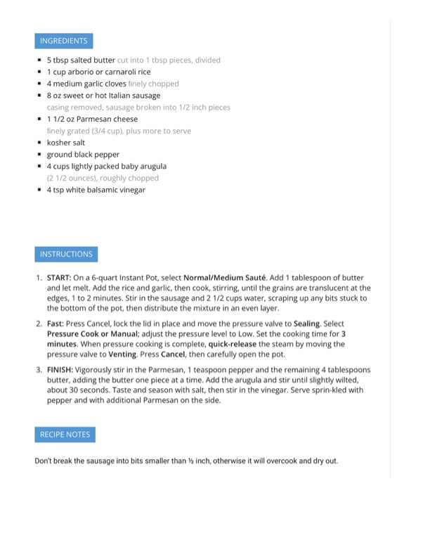

Instant Pot Italian Sausage Risotto

Original cookbook page 520
Creamy Instant Pot risotto with Italian sausage, arugula, and Parmesan cheese. Quick and easy pressure cooker version of the classic dish.
Prep: 10 minutes • Cook: 3 minutes pressure + 5 minutes finishing • Total: 18 minutes
Ingredients
- 5 tbsp salted butter, cut into 1 tbsp pieces, divided
- 1 cup arborio or carnaroli rice
- 4 medium garlic cloves, finely chopped
- 8 oz sweet or hot Italian sausage, casing removed, sausage broken into 1/2 inch pieces
- 1 1/2 oz Parmesan cheese, finely grated (3/4 cup), plus more to serve
- Kosher salt
- Ground black pepper
- 4 cups lightly packed baby arugula (2 1/2 ounces), roughly chopped
- 4 tsp white balsamic vinegar
Instructions
- On a 6-quart Instant Pot, select Normal/Medium Sauté. Add 1 tablespoon of butter and let melt. Add the rice and garlic, then cook, stirring, until the grains are translucent at the edges, 1 to 2 minutes. Stir in the sausage and 2 1/2 cups water, scraping up any bits stuck to the bottom of the pot, then distribute the mixture in an even layer.
- Press Cancel, lock the lid in place and move the pressure valve to Sealing. Select Pressure Cook or Manual; adjust the pressure level to Low. Set the cooking time for 3 minutes. When pressure cooking is complete, quick-release the steam by moving the pressure valve to Venting. Press Cancel, then carefully open the pot.
- Vigorously stir in the Parmesan, 1 teaspoon pepper and the remaining 4 tablespoons butter, adding the butter one piece at a time. Add the arugula and stir until slightly wilted, about 30 seconds. Taste and season with salt, then stir in the vinegar. Serve sprinkled with pepper and with additional Parmesan on the side.
Recipe #520 from collection